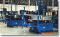

|
|
 |
| |
| OUR
CUSTOMERS "When I presented my challenges
to Accra-Wire Controls, it was apparent that the technology
used in tension control and coil handling could really help
us. We are now able to load a shift's production at one time,
eliminating up to nine coil changes." - Monty
BrennerPlant Manager
Pullman Industries
Michigan, USA
|
| |
|
|
"Applying
Pallet Decoilers to Roll Forming Applications"by
John Heuring
|
| |
|
What is the number one challenge in a manu-facturing
environ-ment? Labor concerns? Machinery
breakdown? Safety hazards?
While all of these are genuine reasons for concern, they do not
address the fundamental challenge for manufacturing facilities,
especially those roll forming parts.
The number one challenge, by virtue of its direct
relationship to the company's profits is production efficiency.
Moreover, as competition increases and profit margin decreases,
fabricators have an ever-greater need to find innovative ways to
increase productivity without sacrificing the bottom line. A pallet
decoiler can be a possible solution to the problem.
Roll formers have different demands from pallet
decoilers than stamping presses do. Typically, roll formers run
faster and require more frequent coil changeovers, hindering the
roll former's uptime and increasing the chance of injury to operators.
Employing a pallet decoiler can allow a company
to load an entire skid of material as it comes from the supplier.
This cuts the amount of time needed to change a coil and, in doing
so, increases the uptime of the roll forming machine.
Additionally,
many companies have found that they can order lager coil outside
diameters (ODs), some as large as 72 inches, since some pallet decoilers
allow for running these massive packages.
The combination of larger coil ODs and loading multiple coils on
a pallet decoiler increases the uptime of the roll former and in
turn helps increase the productivity and profits of the manufacturing
facility. The chance of the coil falling off of a "C"
hook or cradle during the loading procedure is eliminated.
|
| |
Special
considerations
Higher Speeds. The first of these is higher speeds at which
roll forming lines generally run. Some lines travel in excess of 250
feet per minute (FPM). To ensure safety when running at these speeds,
a buyer should keep a few points in mind.
Power transmission components must be adequate for these higher
speeds. Are the motor, gearbox, linkage, shaft, and bearings rated
for the considerable speeds? Is the tension control mechanism sufficient
to maintain safe control of the material when running at these high
speeds? What about safety in an emergency stop situation? Is there
adequate horsepower and/or braking capability to stop the load of
6,000 pounds (or what ever the skid weight may be)? How will the
coil stay on the decoiler platform in these situations?
A few companies that have built units to run at these higher speeds
have developed heavy-duty holding devices that mount to a platform.
The operator loads the centering device, which is than adjusted
to the coil's inside diameter (ID). This system requires that the
pallet's crossboards not be within the coil ID, and most service
centers will comply with a customer's request for this type of pallet
design.
Especially at higher speeds, safety becomes much more of an issue.
Therefore, it may be wise to thoroughly discuss these conditions
with the pallet decoiler manufacturer before ordering.
Acceleration Time Another consideration is the
acceleration time of the roll former. Many servo- or clutch-driven
mills have instant acceleration. Acceleration time has direct impact
on the amount of horsepower required to run an application. Once
factors such as capacity, speed, and coil size have been calculated
into the inertia equation, acceleration time becomes the most important
variable. The horsepower required is inversely proportional to the
acceleration (and deceleration) time. For example, consider an application
calling for a I-horsepower motor at 2-second acceleration/deceleration
time.
If
the acceleration time were cut to 1 second, the horsepower would
double to 2 horsepower, a significant difference. Conversely, if
the acceleration/deceleration time were doubled to 4 seconds, the
horsepower requirement would be cut in half, another significant
difference.
|
| |
How
to apply
How can a fabricator determine which specific roll forming applications
lend themselves to the use of a pallet decoiler? Traditionally, pallet
decoilers have been used on high-production lines that use the same
or similar materials. This means a mill would run the same or similar
gauge material with the same or similar slit widths. Pallet decoilers
are used for these applications because an entire skid of material
can be loaded, resulting in reduced coil changeover.
However, fabricators are finding that using pallet decoilers on
lines that run many materials can also be effective. One reason
for this is the versatility certain models provide. Pallet decoiler
manufacturers have designed models that can run a range of widths
and gauges on one unit.
Also, the inherent safety benefit realized by using a pallet decoiler
is a tempting cost justification. When an operator loads the pallet
with a forklift, rather than individually handling the coils, safety
is enhanced.
What about using pallet decoilers plant-wide? Consider the example
of Pullman Industries in South Heaven, Michigan. With a new plant
being built, the engineering staff was struggling with recurring
bottlenecks in production. How could they roll formers producing
at top level when coil changeovers were so frequent?
The company had used pallet decoilers in its other locations with
good success.
After weighing the pros and cons of various coil handling methods,
the company decided to
employ pallet decoilers throughout the plant. Each of its 14 roll
forming lines being installed incorporated a pallet decoiler to
pay off the steel.
As mentioned previously, some companies also use pallet decoilers
to allow for the use of larger OD coils. The company increased its
coil ODs to 60 inches (form the previous 48 inches) and changed
the controls on the roll former.
By employing these various changes, the company increased production
400 percent. The shops do not have any overhead cranes, reels, or
cradles. One operator can now run two roll formers simultaneously.
|
| |
When
not apply
Although the use of pallet decoilers with roll formers can provide
benefits, it is not beneficial for all applications. For example,
one application not conducive to the use of a pallet decoiler is to
run a large number of different coil widths on one line. A pallet
decoiler is probably not the best choice here, especially if only
partial coils are run.
Additionally, certain excessively high-speed applications (400
FPM or more), such as tube mills, can require tremendous amounts
of horsepower. This factor will sometimes make a pallet decoiler
cost-prohibitive.
|
| |
What
About Wide and/or Thick Material?
Many
fabricators believe that limitations with pallet decoilers center
on the material widths or thickness. While this is true of very wide
materials (30inches or wider), or excessively heavy-gauge material
(3/16 inch or heavier), it is not as restricted as some may imagine.
High-performance pallet decoilers, with slight modifications, can
run
material thickness to .187 inch (with widths less than 6 inches) and
widths to 30 inches (with thickness less than .040 inch). |
| |
Summary
By considering the special challenges involved in roll forming, fabricators
can gain an understanding of the vast or limited application of pallet
decoilers within their own facilities.
Reducing coil changeover, increasing operator safety, and reducing
mill downtime are all possible by applying a pallet decoiler to
the appropriate roll forming application. Discussing the application
thoroughly with the pallet decoiler manufacturer will help ensure
a smooth transition to this alternative coil handling method.
By reviewing the limitations of pallet decoilers, roll forming
companies can be realistic in their expectations from the machinery.
When applied properly, pallet decoilers can help increase
production efficiency and profits.
REPRINTED WITH PERMISSION FROM THE SEPTEMBER
1997 ISSUE OF THE FABRICATOR (R)
833 FEATHERSTONE RD, ROCKFORD IL 61107-6302, 815/399-8700
|
| |
| Consult
AWC for the right choice for YOUR application. |
|